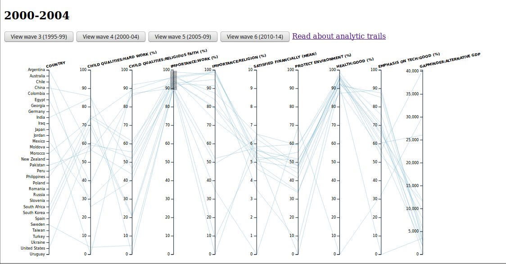
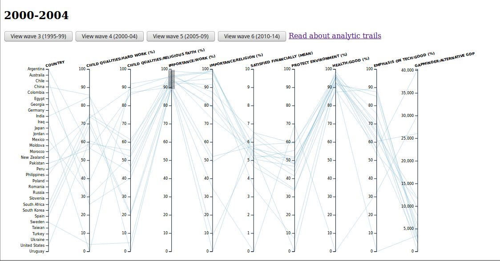
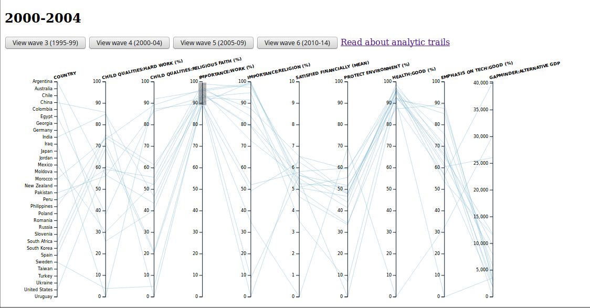
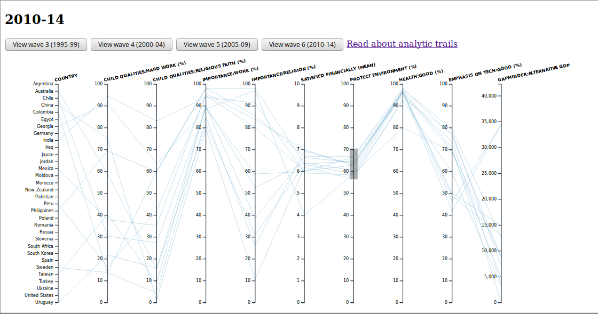

Although, for wave 4 and 6, the countries which show most importance in work seems to be the one among the ones with most importance shown in religion but I don't think that it can be generalized to all the countries.
 

In Hindu mythology, it is said that "Karma hi Dharma hai" meaning work is equivalent to religion. Also, in accordance with [1], religion does affect the way, people view their jobs. I thought that it would be interesting to see by using WVS data if there is any corelation between practicing religion and the desire to work hard.
For this purpose, I used qualities that are desired in children - hard work and religious faith; and how much importance is placed on work and religion in a country.
Although, for wave 4 and 6, the countries which show most importance in work seems to be the one among the ones with most importance shown in religion but I don't think that it can be generalized to all the countries.

There doesn't seem to be any relation between children qualities - hard work and religious faith.

For the second trail, I wanted to see how many people would be interested in protecting the environment if they are financially satisfied and are heathy. Would they also favour technology while protecting environment?
My plots reveal that for the most part, Countries with people financially satisfied and healthy actually would like to save environment. But, I could not see any general trend in terms of putting emphasis on technology. 
For this part, I used Alternative GDP from Gapminder, aggregated the values to get the results for th desired year. Alternative GDP seems to be negatively corelated to everything.
I tried selecting the countries where individuals are satisfied financially, have good health or have shown interest in protecting environment or have put higher emphasis on technology, all of them seem to be negatively corelated to Alternative GDP per capita.


Countries with good state of health also seem to be having mostly negative corelation with ALternative GDP.

1. Religion and the Meaning of Work
Author(s): James C. Davidson and David P. Caddell
Source: Journal for the Scientific Study of Religion, Vol. 33, No. 2 (Jun., 1994), pp. 135-147
Published by: Wiley on behalf of Society for the Scientific Study of Religion
Stable URL: http://www.jstor.org/stable/1386600
Accessed: 20-02-2017 22:23 UTC
2. https://d3js.org/